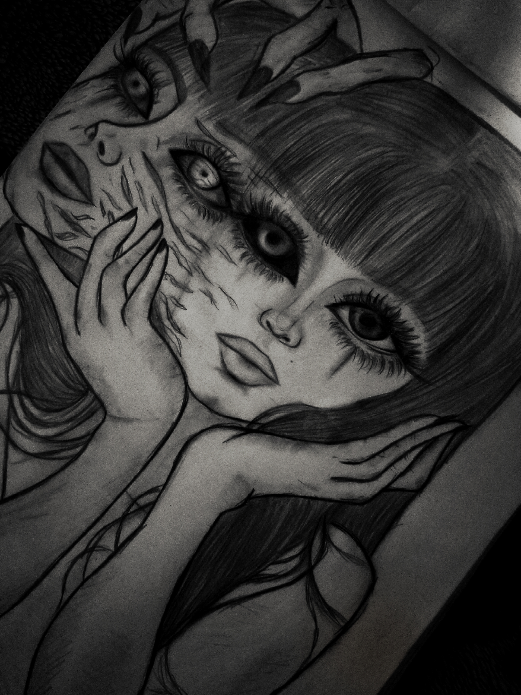
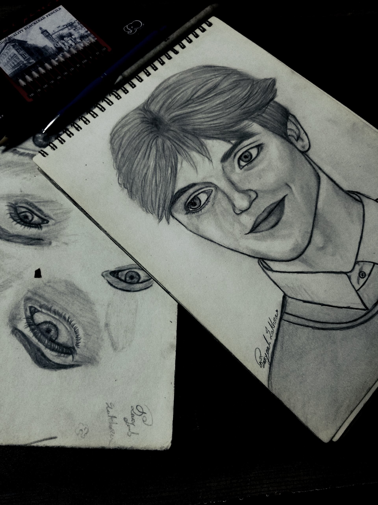
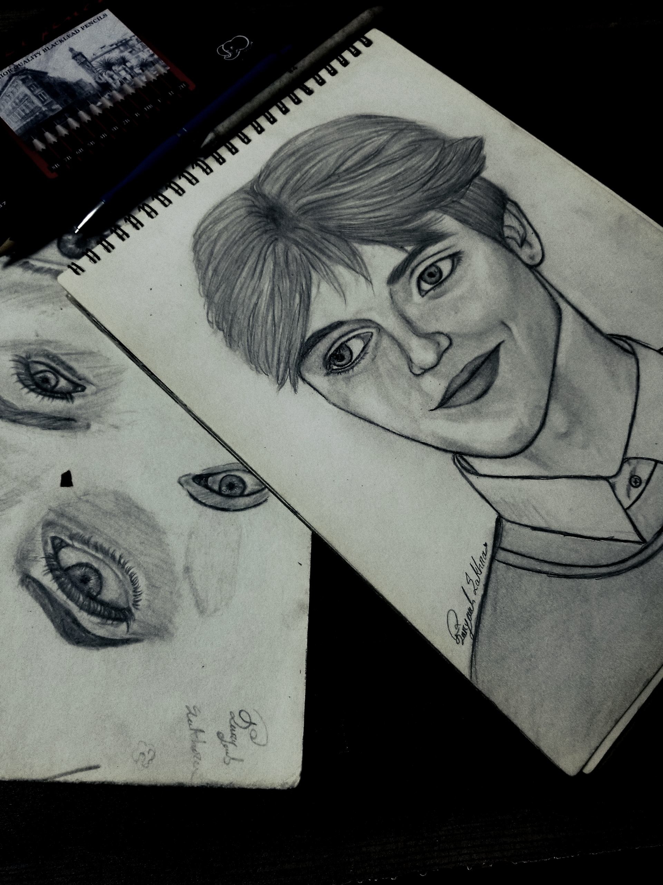
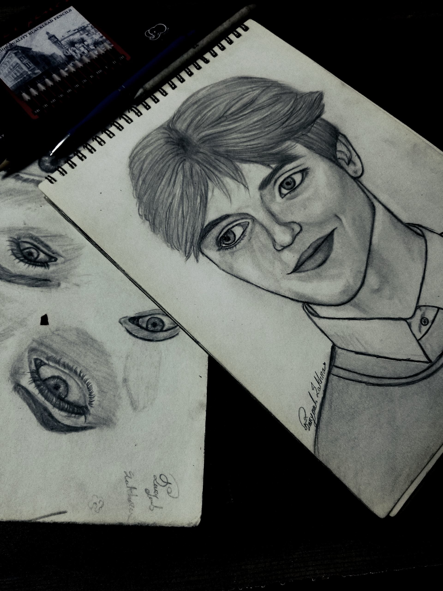

✨ Self-taught artist✨
My Artworks

 


My Skills
Artistic
- Digital Painting (ibisPaint X, Infinite Painter)
- Traditional Sketching (pencil, charcoal, etc.)
- Acrylic & Colored Pencil Painting
- Face & Scenery Sketches
- Creative Illustration & Concept Art
Technical
- HTML5, CSS3, JavaScript
- Responsive Design & Animations
- Dark/Light Theme Toggle
- Version Control (Git & GitHub)
Tools
- Canva, Polish
- Procreate / Photoshop / Krita
- VS Code
Soft Skills
- Creativity & Innovation
- Time Management
- Collaboration & Teamwork
- Adaptability & Communication
My Experience
Freelance Artist
2021 – PresentCreated custom digital artworks, portraits, and traditional sketches for clients. Specialized in acrylic painting, digital illustrations, and scenery art.
Graphic Design Projects
2022 – PresentDesigned posters, banners, and creative edits using Canva, Polish, and Photoshop for school projects and personal commissions.
Web Class Projects
2024 – PresentBuilt responsive portfolio websites with HTML, CSS, and JavaScript. Experimented with creative layouts, dark/light themes, and animations.